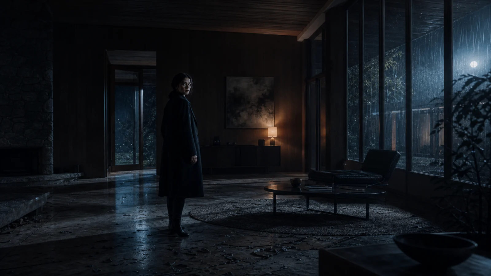

01 / Decisions → Prompt
The Decisions
A woman enters an empty house at midnight.
She hears something behind her.
SHOT
LIGHT
PACE
Live prompt
Create a suspenseful scene using [choose a shot], [choose lighting], and [choose pacing].
Choose one option from each group to build the prompt.

Unselected / live preview
Camera movementSlow dolly-in
Lens35 mm
Color paletteDesaturated blue
Actor blockingCenter frame
WeatherLight rain
Set designMinimal interior
AI completed 6 decisions you never made.
3 decisions became 1 prompt.
But who decided the rest?